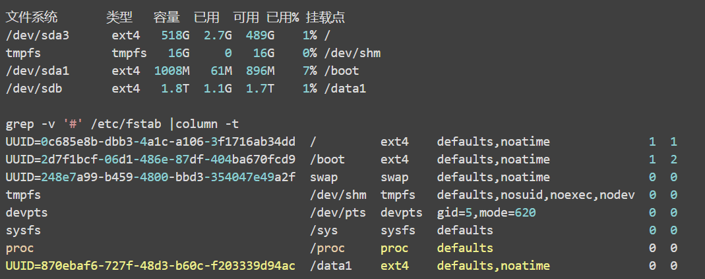
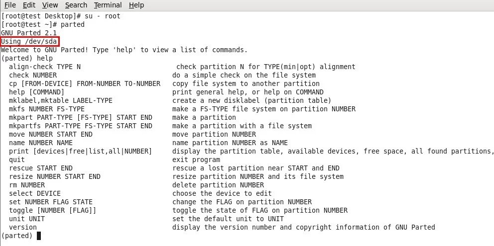
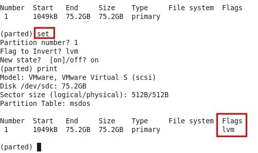

导航
文件系统层次结构标准
| 目录 | 描述 |
|---|---|
| / | 第一层次结构 的根、 整个文件系统层次结构的根目录。 |
| /bin/ | 需要在单用户模式可用的必要命令（可执行文件）；面向所有用户，例如： cat、 ls、 cp。 |
| /boot/ | 引导程序文件，例如： kernel、initrd；时常是一个单独的分区 |
| /dev/ | 必要设备, 例如：/dev/null. |
| /etc/ | 特定主机，系统范围内的配置文件。关于这个名称目前有争议。在贝尔实验室关于UNIX实现文档的早期版本中，/etc 被称为etcetera， 这是由于过去此目录中存放所有不属于别处的所有东西（然而，FHS限制/etc只能存放静态配置文件，不能包含二进制文件）。 自从早期文档出版以来，目录名称已被以各种方式重新称呼。最近的解释包括反向缩略语如："可编辑的文本配置"（英文 "Editable Text Configuration"）或"扩展工具箱"（英文 "Extended Tool Chest"）。 |
| /etc/opt/ | /opt/的配置文件 |
| /etc/X11/ | X窗口系统(版本11)的配置文件 |
| /etc/sgml/ | SGML的配置文件 |
| /etc/xml/ | XML的配置文件 |
| /home/ | 用户的家目录，包含保存的文件、个人设置等，一般为单独的分区。 |
| /lib/ | /bin/ 和 /sbin/中二进制文件必要的库文件。 |
| /media/ | 可移除媒体(如CD-ROM)的挂载点 (在FHS-2.3中出现)。 |
| /mnt/ | 临时挂载的文件系统。 |
| /opt/ | 可选应用软件 包。 |
| /proc/ | 虚拟文件系统，将内核与进程状态归档为文本文件。例如：uptime、 network。在Linux中，对应Procfs格式挂载。 |
| /root/ | 超级用户的家目录 |
| /sbin/ | 必要的系统二进制文件，例如： init、 ip、 mount。 |
| /srv/ | 站点的具体数据，由系统提供。 |
| /tmp/ | 临时文件(参见 /var/tmp)，在系统重启时目录中文件不会被保留。 |
| /usr/ | 用于存储只读用户数据的第二层次； 包含绝大多数的(多)用户工具和应用程序，注意不是user的缩写，而是"Unix Software Resource"的缩写。 |
| /usr/bin/ | 非必要可执行文件 (在单用户模式中不需要)；面向所有用户。 |
| /usr/include/ | 标准包含文件。 |
| /usr/lib/ | /usr/bin/和/usr/sbin/中二进制文件的库。 |
| /usr/sbin/ | 非必要的系统二进制文件，例如：大量网络服务的守护进程。 |
| /usr/share/ | 体系结构无关（共享）数据。 |
| /usr/src/ | 源代码,例如:内核源代码及其头文件。 |
| /usr/X11R6/ | X窗口系统 版本 11, Release 6. |
| /usr/local/ | 本地数据的第三层次， 具体到本台主机。通常而言有进一步的子目录， 例如：bin/、lib/、share/. |
| /var/ | 变量文件——在正常运行的系统中其内容不断变化的文件，如日志，脱机文件和临时电子邮件文件。有时是一个单独的分区。 |
| /var/cache/ | 应用程序缓存数据。这些数据是在本地生成的一个耗时的I/O或计算结果。应用程序必须能够再生或恢复数据。缓存的文件可以被删除而不导致数据丢失。 |
| /var/lib/ | 状态信息。 由程序在运行时维护的持久性数据。 例如：数据库、包装的系统元数据等。 |
| /var/lock/ | 锁文件，一类跟踪当前使用中资源的文件。 |
| /var/log/ | 日志文件，包含大量日志文件，为了防止日志占满根分区，生产环境中一般是单独分区。 |
| /var/mail/ | 用户的电子邮箱。 |
| /var/run/ | 自最后一次启动以来运行中的系统的信息，例如：当前登录的用户和运行中的守护进程、一些守护进程的pid文件、socket文件。现已经被/run代替。 |
| /var/spool/ | 等待处理的任务的脱机文件，例如：打印队列和未读的邮件。 |
| /var/spool/mail/ | 用户的邮箱(不鼓励的存储位置) |
| /var/tmp/ | 在系统重启过程中可以保留的临时文件。 |
| /run/ | 代替/var/run目录。 |
partprobe 不重启的情况重读分区
https://www.bookstack.cn/read/linux-command-1.6.0/command-partprobe.md
[root@localhost ~]# partprobe
通过UUID挂载分区
> https://my.oschina.net/leejun2005/blog/290073UUID 全称是 Universally Unique Identifier，也就是说，每个分区有一个唯一的 UUID 值，这样就不会发生分区识别混乱的问题了。
在 fstab 中用 UUID 挂载分区，看起来向这样：
UUID=1234-5678 /mnt/usb vfat utf8,umask=0 0 0
在 UUID= 后面填入分区相应的 UUID 值，就可以正确挂载分区了。
那么，我们如何知道一个分区的 UUID 呢？
有 3 种方法：
1 通过浏览 /dev/disk/by-uuid/ 下的设备文件信息
# ls -l /dev/disk/by-uuid/
------
lrwxrwxrwx 1 root root 10 10-13 09:14 0909-090B -> ../../sdb5
lrwxrwxrwx 1 root root 10 10-13 09:13 7c627a81-7a6b-4806-987b-b5a8a0a93645 -> ../../sda4
.....
2 通过 vol_id 命令
# vol_id /dev/sdb5
ID_FS_USAGE=filesystem
ID_FS_TYPE=vfat
ID_FS_VERSION=FAT32
ID_FS_UUID=0909-090B
ID_FS_UUID_ENC=0909-090B
ID_FS_LABEL=SWAP
ID_FS_LABEL_ENC=SWAP
ID_FS_LABEL_SAFE=SWAP
3 通过 blkid 命令
# blkid /dev/sdb5
/dev/sdb5: LABEL="SWAP" UUID="0909-090B" TYPE="vfat"
通过这三种方法都可以获得分区的 UUID，UUID 依据分区不同，长度和格式都不相同。
比如我最后把 /dev/sdb 挂载在了 /data1 目录下（不放心的话重启或者生成文件测试下，看挂载分区的空间被占用没）：

LVM逻辑磁盘卷管理
关于LVM的概念：http://molinux.blog.51cto.com/2536040/518441
http://wqmsl.blog.51cto.com/847418/471784
3层结构——物理卷（pv），卷组（vg），逻辑卷（lv）
操作
http://hi.baidu.com/voostar/item/6aaeca5b779a1b948c12edf2
操作流程：
- 建立LVM类型的分区(如果是裸盘直接创建PV则没有此步)
- 建立LVM物理卷PV
- 建立LVM卷组VG
- 建立LVM逻辑卷LV
- 建立文件系统
- 挂载文件系统
fdisk -l 查看已被系统识别的磁盘 fdisk对磁盘进行划分，使用fdisk命令的 t 选项将物理磁盘卷ID修改8e（LVM的物理卷）
pv，vg，lv分别对应物理卷，卷组，逻辑卷
前三者加上create，extend，remove，display关键字分别对应创建，拓展，移除，查看。
pvcreate将该磁盘或分区创建成pv 裸磁盘也可以直接创建,如 pvcreate /dev/sdb
vgextend加入已存在的卷组vg中，新增则是vgcreate 卷组名
lvextend有了空闲空间的卷组则可以扩容
lvcreate -L 10G -n 卷名 卷组名
关于大小写的L , -L指定size ,小写 l 指定的是PE数
使用剩余的全部空间的形式为 -l +100%FREE
从卷组的剩余空间为某个LV扩容,不需要给出卷组名,命令格式如
lvcreate -L 10G -n 卷名
在-L 后面给的size,带+号为在原基础上增加多少,不带+号为总大小为多少
lvdisplay查看完整的卷路径
resize2fs最后重新生成大小----设备完整路径,如 /dev/mapper/rootvg
解释得更为详细
http://h2olyu.blog.51cto.com/1490267/1181547
xfs文件系统LVM扩容
https://my.oschina.net/Jalo/blog/804412
- df -hP
- fdisk -l
- vgdisplay
- pvcreate /dev/sdc
- gextend centos /dev/sdc
- vgdisplay
- lvextend -l +5G /dev/centos/var
- xfs_growps /dev/centos/var
- df -hP
以上是有新磁盘的时候扩容到已有的逻辑卷上的9个步骤
如果逻辑卷还有剩余空间可以使用
vgs 查看剩余了多少
然后使用1、7、8、9这4个命令
LVM的缩减
标准步骤
1.umount filesystem
2.e2fsck filesystem
3.resize2fs filesystem
4.lvredure
http://blog.itpub.net/32980/viewspace-1123851/
http://bbs.chinaunix.net/thread-1925323-1-1.html
LVM从VG中删除PV及删除未知PV
比如： 先创建了PV，加入了VG，再mkfs.ext4去格式化掉这个PV，就出现了以下情况
VG中去除PV unknown device：
[root@bogon ~]# vgreduce --removemissing VolGroup
Couldn't find device with uuid OBTOlS-4Gol-YOEY-ybJ1-8HSh-dA2E-yNtZWx.
Wrote out consistent volume group VolGroup
从VG中去除特定PV：
vgreduce VolGroup00 /dev/xvdb1
parted命令
http://www.cnblogs.com/zhangpengme/archive/2011/12/29/2305963.html
执行parted进入parted的交互环境，不同的是help打在前面（如help mkpart），获取帮助；
与fdisk相同的是，同样应当跟设备文件名，如不加，将会自动寻找首个磁盘设备；

另外，parted里的分区是即时执行，而fdisk是被缓存
parted对磁盘置标志位，使用set

parted 非交互模式
https://blog.51cto.com/qq862228267/2046392
parted 使用-s参数, 即script, 可以非交互模式下完成操作
parted 对齐问题
遇到提示:Warning: The resulting partition is not properly aligned for best performance.
https://blog.hqcodeshop.fi/archives/273-GNU-Parted-Solving-the-dreaded-The-resulting-partition-is-not-properly-aligned-for-best-performance.html
也就是该磁盘第一个分区, 起始点设为0%
GPT分区表分区个数不受限
[root@localhost ~]# parted -s /dev/sdb print
Model: VMware, VMware Virtual S (scsi)
Disk /dev/sdb: 4398GB
Sector size (logical/physical): 512B/512B
Partition Table: gpt
Disk Flags:
Number Start End Size File system Name Flags
2 100GB 200GB 100GB primary
3 200GB 300GB 100GB primary
4 300GB 400GB 100GB primary
5 400GB 500GB 100GB primary
6 500GB 600GB 100GB primary
在MBR分区表上, 逻辑分区是建立在扩展分区之上的
[root@localhost ~]# parted -s /dev/sdb mklabel msdos
[root@localhost ~]# parted -s /dev/sdb print
Model: VMware, VMware Virtual S (scsi)
Disk /dev/sdb: 4398GB
Sector size (logical/physical): 512B/512B
Partition Table: msdos
Disk Flags:
Number Start End Size Type File system Flags
[root@localhost ~]# parted -s /dev/sdb mkpart extend 100G 2000G
[root@localhost ~]# parted -s /dev/sdb print
Model: VMware, VMware Virtual S (scsi)
Disk /dev/sdb: 4398GB
Sector size (logical/physical): 512B/512B
Partition Table: msdos
Disk Flags:
Number Start End Size Type File system Flags
1 1049kB 100GB 100GB primary
2 100GB 2000GB 1900GB extended lba
[root@localhost ~]# parted -s /dev/sdb mkpart logic 100G 200G
[root@localhost ~]# parted -s /dev/sdb print
Model: VMware, VMware Virtual S (scsi)
Disk /dev/sdb: 4398GB
Sector size (logical/physical): 512B/512B
Partition Table: msdos
Disk Flags:
Number Start End Size Type File system Flags
1 1049kB 100GB 100GB primary
2 100GB 2000GB 1900GB extended lba
5 100GB 200GB 100GB logical
而在GPT分区表上, 先划扩展分区, 再在扩展分区之上创建逻辑分区, 这一流程, 是错误的
[root@localhost ~]# parted -s /dev/sdb mkpart extend 100G 100%
[root@localhost ~]# parted -s /dev/sdb print
Model: VMware, VMware Virtual S (scsi)
Disk /dev/sdb: 4398GB
Sector size (logical/physical): 512B/512B
Partition Table: gpt
Disk Flags:
Number Start End Size File system Name Flags
1 1049kB 100GB 100GB primary
2 100GB 4398GB 4298GB extend
[root@localhost ~]# parted -s /dev/sdb mkpart logic 100G 50%
Error: You requested a partition from 100GB to 2199GB (sectors 195312500..4294967295).
The closest location we can manage is 4398GB to 4398GB (sectors 8589932544..8589932544).
GPT分区表依旧可以建立扩展分区和逻辑分区, 但与主分区已不存在任何不同之处 https://www.eassos.cn/jiao-cheng/ying-pan/mbr-gpt-fenqubiao.php
[root@localhost ~]# parted -s /dev/sdb print
Model: VMware, VMware Virtual S (scsi)
Disk /dev/sdb: 4398GB
Sector size (logical/physical): 512B/512B
Partition Table: gpt
Disk Flags:
Number Start End Size File system Name Flags
[root@localhost ~]# parted -s /dev/sdb mkpart primary 0% 100G
[root@localhost ~]# parted -s /dev/sdb mkpart extend 100G 200G
[root@localhost ~]# parted -s /dev/sdb mkpart logic 100G 200G
Error: You requested a partition from 100GB to 200GB (sectors 195312500..390625000).
The closest location we can manage is 200GB to 200GB (sectors 390625280..390625280).
[root@localhost ~]# parted -s /dev/sdb mkpart logic 200G 300G
[root@localhost ~]# parted -s /dev/sdb print
Model: VMware, VMware Virtual S (scsi)
Disk /dev/sdb: 4398GB
Sector size (logical/physical): 512B/512B
Partition Table: gpt
Disk Flags:
Number Start End Size File system Name Flags
1 1049kB 100GB 100GB primary
2 100GB 200GB 100GB extend
3 200GB 300GB 100GB logic
fdisk的详解
http://linux008.blog.51cto.com/2837805/548711
在fdisk里的操作，在没有使用wq保存更改操作以前，不会生效，但相应的操作指令会被缓存。